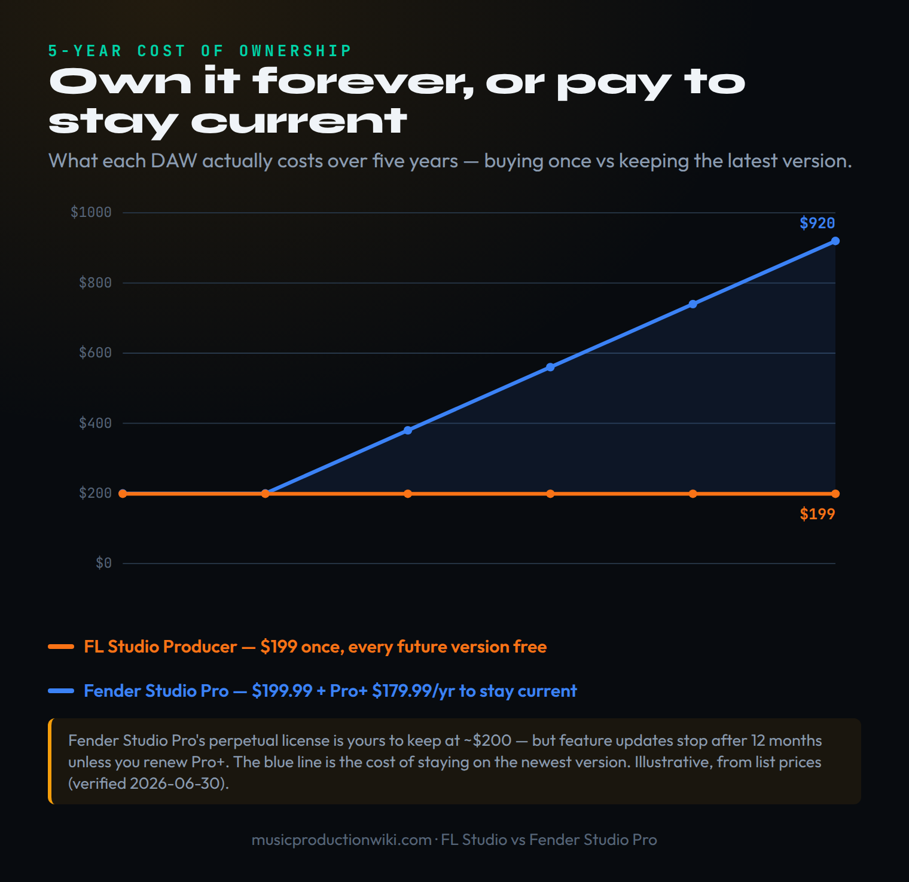
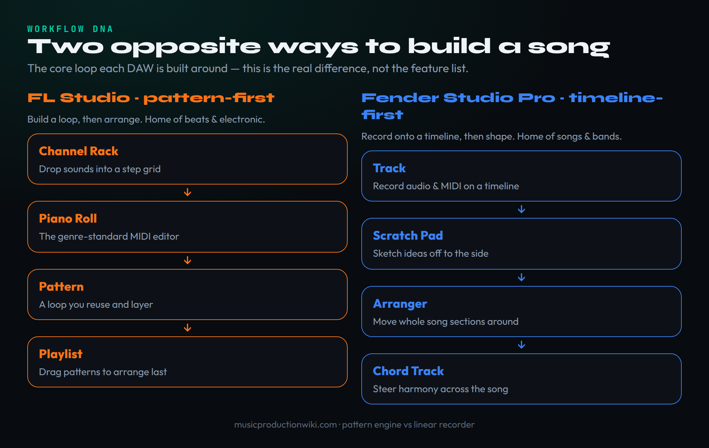
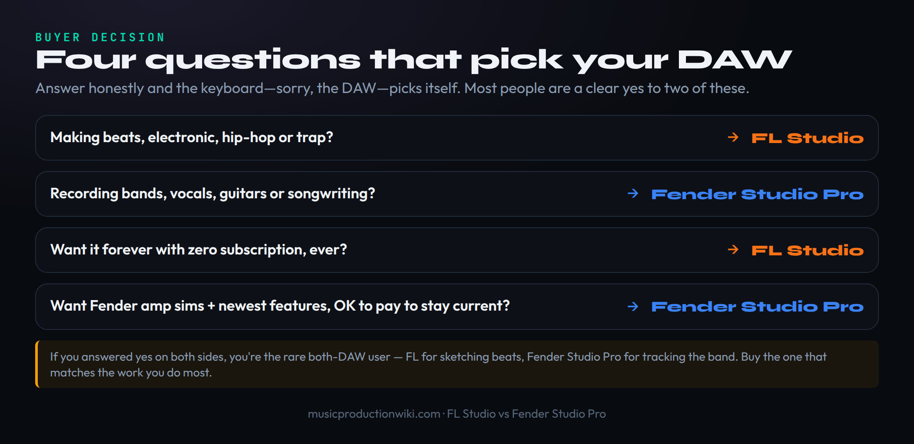

The short answer
These two DAWs barely compete for the same person, so stop asking which is “better” and ask which job you’re hiring it for. FL Studio is a pattern-based beat-and-electronic engine you buy once and own forever — every future version is free, for life. Studio One — now Fender Studio Pro 8.1 after Fender renamed it in January 2026 — is a linear, record-and-arrange songwriter’s DAW you keep current with a yearly Pro+ subscription after the first twelve months. So the decision turns on two things at once: the workflow that matches how you actually make music, and the ownership model you want to live with. Our scores land at 9.1 for FL Studio and 8.7 for Fender Studio Pro, and we’ll flip that verdict openly for the band, the singer-songwriter and the recording engineer, for whom the timeline DAW is the right buy.
Search “FL Studio vs Studio One” right now and you will find a market in mild confusion, because one of the two products changed its name three weeks into 2026. PreSonus Studio One Pro 7 is gone; in its place is Fender Studio Pro 8 — same engine, same Hamburg development team, new owner-facing branding and a fresh layer of Fender guitar amps bolted on. We’ll untangle that rename first, because it spooks existing users and confuses new buyers, and then we’ll do the thing the rename doesn’t change: line these two DAWs up on the questions that actually decide a purchase.
And those questions are not the ones the spec-sheet comparisons obsess over. Stock-plugin counts and CPU benchmarks are real, and we’ll cover them, but they are tiebreakers. The decision is made earlier, on two axes that the feature lists bury: how you build a song — looping a pattern versus recording onto a timeline — and how you pay to own the tool — one purchase forever versus a perpetual license you subscribe to keep current. Get those two right and the DAW picks itself. Get them wrong and you’ll spend a year fighting software that was built for someone else’s music.
This article contains affiliate links. If you buy through them we may earn a commission at no extra cost to you. It doesn’t change the verdict — the scores and the recommendations are the same whichever link you click.
The 2026 plot twist: Studio One is now Fender Studio Pro
If you’ve used Studio One for years and the news gave you a jolt, here is the reassurance up front: nothing about the DAW you know has been thrown away. On 13 January 2026, Fender Musical Instruments Corporation — which has owned PreSonus since 2021 — folded the PreSonus software and interface lines into a new “Fender Studio” brand. Studio One Pro 7 was reintroduced as Fender Studio Pro 8, the Quantum and AudioBox interfaces became Fender Quantum and Fender AudioBox, and the account portal you log into shifted from MyPreSonus to MyFender. The current release is Fender Studio Pro 8.1, which shipped in June 2026.
What actually changed, and what didn’t? The engine is the same, written by the same German team in Hamburg — Fender executives and PreSonus leadership both went out of their way to say the developers stayed put, and that continuity matters far more than the logo on the splash screen. Your existing songs, plugins, ARA/ARA2 Melodyne integration and the whole drag-and-drop workflow carry straight over. What’s genuinely new is a Fender layer: the Mustang and Rumble Native plugins put 57 guitar and bass amp models and 125 effects pedals inside the DAW, plus a modernized interface, a new Channel Overview and Arrangement Overview, and AI audio-to-note conversion. Version 8.1 added an in-app Studio Assistant, a native Vocal Tune pitch-correction plugin, and integrations with Moises and Splice. Our existing Studio One review covers the underlying DAW in depth.
One naming trap worth flagging, because Fender created it themselves: there is a free app called “Fender Studio” — a simple, GarageBand-style recorder launched in 2025 — and it is not the same product as “Fender Studio Pro,” the full $199.99 DAW that used to be Studio One. They share a name and can pass sessions between each other, but only one of them is the professional production environment. When you’re shopping, make sure you’re comparing FL Studio to Fender Studio Pro, not to the free app. Throughout this article, when we say “Studio One” we mean the DAW now sold as Fender Studio Pro; we use the old name where search and muscle memory still do.
The honest caveat for existing users is not technical, it’s strategic: Fender has a history of acquiring and reshaping brands, and the move from a beloved, audio-first name to a guitar company’s badge introduces a question mark over long-term direction that simply doesn’t exist over Image-Line, a privately held company that has shipped FL Studio under one name for 25 years. That uncertainty is small today — the software is good and the team is intact — but it’s real, and it’s one of the reasons our scorecard docks Fender Studio Pro slightly on future direction.
Own it forever, or pay to stay current
This is the difference most comparisons skip, and it may be the most important one for your wallet, so we’re putting it before the workflow discussion. FL Studio and Fender Studio Pro represent two opposite philosophies of owning software, and the gap between them compounds every year you keep producing.
FL Studio’s model is the unusual one: Lifetime Free Updates. You buy an edition once — Fruity at $99, Producer at $199, Signature at $299, All Plugins at $499 — and every future version is free forever. Not a discounted upgrade; free. Image-Line has honored this for over 25 years, which means the producer who bought FL Studio 20 received FL Studio 2025.2 at no cost, and the person who buys Producer today will get FL Studio 26, 27 and whatever comes after for nothing. There is no subscription, no upgrade fee, no maintenance plan. The one-time price is the whole price.
Fender Studio Pro works the way most of the industry does. The $199.99 perpetual license is yours to keep — you own the exact version you buy, forever — and it includes twelve months of feature updates. After that first year, staying on the newest release means a Pro+ subscription: $179.99 per year (which also renews your perpetual license) or $19.99 a month. So you genuinely can buy once and freeze on today’s version at about $200 flat — but the moment you want next year’s features, you’re paying again. (Worth correcting a figure floating around the web: the Pro+ annual price is $179.99, confirmed on Fender’s own store; the cheaper $149.99 number some sites quote is a hardware-bundle demo-upgrade, a different SKU.)
Run that forward five years and the chart below is the result. FL Studio Producer is a flat $199 line: buy it once, get every update free, spend nothing more. Fender Studio Pro, if you want to stay current, starts at $199.99 and adds roughly $180 a year after the first, landing near $920 over five years. That is not a knock on Fender — subscriptions fund faster development, and you’re paying for new features, not air — but it is a real cost difference that nobody puts in front of you at checkout.

The honest framing isn’t “subscriptions are evil.” It’s that you should choose your ownership model on purpose. If you value owning a tool outright, never thinking about a renewal, and getting every new version free, FL Studio is built for exactly that temperament. If you’d rather pay a predictable yearly fee for a steady drip of new features — and especially if you want the latest Fender amp models and AI tools as they land — Fender Studio Pro’s model is reasonable. Just don’t back into a subscription by accident the way many CD-quality buyers back into one; decide it knowingly.
Two opposite ways to build a song
Now the workflow, which is the other half of the decision and, for most people, the bigger half. A DAW is a way of thinking about a song made into software, and these two were built around opposite ways of thinking. Neither is better in the abstract; one is better for the music you make.
FL Studio is pattern-first. You drop sounds into the Channel Rack, program a loop in the step sequencer or the Piano Roll, and that pattern becomes a reusable block you arrange later in the Playlist. The whole flow is loop-build-then-arrange, which is exactly how beats, electronic and hip-hop tend to come together — you make a four- or eight-bar idea that’s great, then you build the track out of variations on it. And FL Studio’s Piano Roll is widely considered the best MIDI editor in any DAW, full stop; it is the single feature most often cited when producers explain why they won’t leave. If your music starts as a loop, FL Studio’s DNA is yours.
Fender Studio Pro is timeline-first. You record audio and MIDI straight onto a linear arrangement, sketch ideas in the Scratch Pad off to the side, move whole sections around with the Arranger track, and steer harmony with the Chord Track. The flow is record-then-shape, which is how songs are written by people playing instruments — you capture a take, then comp, edit and arrange it into a finished piece. Studio One earned its reputation as a recording and mixing DAW for exactly this reason, and the drag-and-drop directness of its interface is genuinely faster for that kind of work than FL’s pattern abstraction. If your music starts as a performance, Fender Studio Pro’s DNA is yours.

Here’s the part people gloss over: both DAWs can do both jobs — FL Studio added solid audio recording and a real Playlist years ago, and Fender Studio Pro has perfectly capable beat tools in its Impact drum sampler and Sample One. The point isn’t that one is incapable; it’s that each is fighting its own grain when you push it into the other’s territory. Tracking a five-piece band in FL Studio is possible and slightly awkward; programming a complex trap hi-hat pattern in Fender Studio Pro is possible and slightly awkward. You feel that friction every session, and over months it’s the thing that makes you love or resent your DAW. Match the grain to your music and the friction disappears.
Home turf: beats and electronic vs recording and songwriting
Let’s make the two home fields concrete, because “workflow” is abstract until you see what each DAW does to the music you actually make.
FL Studio’s home turf is beats, electronic and hip-hop. The pattern engine is built for the loop-based way those genres are written; the Piano Roll makes melodic programming and intricate hi-hat rolls fast; and the stock instruments lean electronic — FLEX, Sytrus, Harmor (in higher editions) and a deep bench of synths. The 2025 releases pushed further into producer territory with a Stem Separation feature that splits any audio into parts for remixing, the Loop Starter genre packs that generate starting ideas, Fruity Slicer 2 for chopping loops, and the Gopher AI assistant for in-app help. If you make music that lives or dies by its drum programming and synth work, this is where you want to be — and it’s why FL Studio sits near the top of our best DAW for electronic music ranking. Producers cross-shopping the two electronic-music heavyweights should also read our FL Studio vs Ableton Live comparison.
Fender Studio Pro’s home turf is recording, songwriting and bands. The linear timeline, multitrack comping, the Chord Track and Scratch Pad, and the deep mixing console are aimed at people capturing performances and arranging them into songs. The Fender rebrand sharpened this further: the Mustang and Rumble amp plugins make it a genuinely compelling choice for guitarists and bassists who want studio-grade amp tone built into the DAW, and the new Vocal Tune plugin gives singer-songwriters native pitch correction without a third-party purchase. Its ARA2 integration with Melodyne — retained through the rebrand — remains a best-in-class vocal-editing pairing. If you record instruments and voices, this DAW was built around your session.
The trap to avoid is buying on genre aspiration rather than genre reality. Plenty of producers buy the recording-focused DAW because they intend to start a band someday, then spend two years making beats inside a tool that resists them — or buy the beat engine because it’s what their favorite producer uses, then struggle to track the singer-songwriter material they actually write. Buy for the music in your projects folder right now, not the music in your head.
What’s in the box: editions, plugins, platforms and the learning curve
Now the tiebreakers — the details that decide it once workflow and ownership have narrowed your choice. Start with editions and the recording trap. FL Studio is sold in four tiers, and the cheapest one hides a landmine: Fruity Edition ($99) cannot record audio or place audio clips at all. If you ever want to record a vocal, a guitar or any external source, you need Producer Edition ($199) at minimum — it adds audio recording, audio clips in the Playlist, the Edison editor and Stem Separation. Signature ($299) and All Plugins ($499) pile on more instruments and effects (Gross Beat, Harmor, the full synth bench). Treat Producer as the real entry point. Fender Studio Pro keeps it simpler: one Pro tier at $199.99 perpetual, with every recording and mixing feature included from the start — no edition trap to navigate.
On stock content, both are well-stocked but pointed in different directions. FL Studio’s instruments and effects lean electronic and beat-focused; Fender Studio Pro’s lean toward recording, mixing and now guitar — 57 amp models and 125 pedals is a serious amp-sim library to get in the box, and its mastering and mixing tools are mature. Neither leaves you needing third-party plugins to finish a track, though most producers eventually buy some regardless.
On platforms, both run on Windows and macOS, and both are native on Apple Silicon — though note FL Studio does not support Windows-on-ARM. FL Studio also has a strong mobile and cloud story (FL Studio Mobile, FL Cloud, and FL Studio Remote to control the desktop from a phone); Fender Studio Pro pairs with the free Fender Studio app for mobile capture that hands sessions back to the desktop. Both let you try before you buy with no-time-limit trials — FL’s trial lets you do everything except reopen saved projects, which is the smartest way to test-drive either before paying.
On the learning curve, it’s closer than the reputations suggest. FL Studio is famous for being beginner-friendly because its visual, pattern-based approach clicks fast for beat-makers and because it has the largest tutorial ecosystem of any DAW — whatever you’re stuck on, someone has made a video. Fender Studio Pro’s drag-and-drop directness is arguably more intuitive for traditional recording, and its single-tier simplicity means fewer decisions up front. If you’re a true beginner still choosing, our best DAW for beginners guide weighs both against the field; the short version is that FL suits beat-first learners and Fender Studio Pro suits record-first learners.
Switching, lock-in and resale
Two practical realities before you commit, because a DAW is a long relationship. First, lock-in is real but asymmetric. Projects don’t move cleanly between DAWs — there’s no universal “open my FL project in Studio One” button, and stems-plus-MIDI export is the realistic migration path either way. Both support the open DAWproject format for some interchange, but plugin states, automation and arrangement nuance rarely survive a move intact. Whichever you choose, assume you’re choosing for years, not months, and that re-creating old projects in a new DAW is a real cost. (If you’re cross-shopping the Apple side of this decision, our FL Studio vs Logic Pro, Studio One vs Logic Pro and Logic Pro vs Ableton Live comparisons cover those forks.)
Second, the ownership models change what “keeping” means. With FL Studio you own your license outright and never lose access to anything — there’s no subscription to lapse, and future versions keep arriving free. With Fender Studio Pro, your perpetual license stays valid forever, so you never lose the version you bought; what lapses if you stop paying Pro+ is access to new features, not the software itself. Neither DAW holds your work hostage. Software licenses for both are generally non-transferable, so “resale” isn’t really a factor for either — treat the purchase as a tool you keep, not an asset you flip.
There’s also a brand-stability angle that only cuts one way. Image-Line has shipped FL Studio under one name, one company and one update promise for 25 years; that predictability is itself worth something. Fender Studio Pro is excellent today, but it sits one strategic decision away from a guitar company that just renamed it once. We don’t think that’s a reason to avoid it — the team and the engine are intact — but it’s an honest asterisk on “buy it for the next decade.”
Who should buy which
Here is the decision distilled. Four questions, and most people are a clear yes to two of them — which is usually all it takes.

Buy FL Studio if you make beats, electronic, hip-hop or trap; if you want the best Piano Roll and step sequencer in the business; if owning your tool outright with free updates for life matters to you; or if you’re a budget-first buyer who wants to pay once and never think about it again. Just remember to start at Producer Edition ($199), not Fruity, the moment you might record audio. The full FL Studio review goes deeper on the editions and the workflow.
Buy Fender Studio Pro if you record bands, vocals or guitars; if you write songs on a timeline rather than looping patterns; if you want a deep mixing console and Melodyne-grade vocal editing; or if you’re a guitarist who wants 57 Fender amp models living inside the DAW and you’re comfortable with a yearly subscription to keep current. The single tier and drag-and-drop directness make it a fast, friendly recording environment.
And the deciding flip, stated plainly: our 9.1-to-8.7 verdict favors FL Studio, but it inverts the instant you tell us you record a band or write songs by playing them. For that musician, FL Studio’s pattern-first engine is the friction and Fender Studio Pro’s timeline is the relief — the cheaper-to-own DAW becomes the wrong DAW, and the subscription is a fair price for software that fits the work. Answer the two questions — how you build a song, how you want to own the tool — honestly, and you won’t need the overall score at all.
The verdict: scoring it honestly
We score both DAWs across the axes that decide a real purchase, then weight the overall toward the things that actually determine which one you reach for — workflow fit and ownership model — rather than treating every axis as equal. FL Studio takes the overall, 9.1 to 8.7, on the strength of its beat engine and its own-it-forever pricing; Fender Studio Pro answers right back on recording, arrangement and stock depth, and it is the better buy for anyone whose music starts as a performance. The two amber bars are each DAW’s genuine weak spot — read your two or three axes, not just the bottom line.
| Axis | FL Studio | Fender Studio Pro |
|---|---|---|
| Beat-making & electronic | 9.4 | 8.3 |
| Recording & arrangement | 8.2 | 9.4 |
| Stock instruments & effects | 9.0 | 8.8 |
| Ownership & 5-year value | 9.5 | 8.1 |
| Learning curve & speed | 8.7 | 8.9 |
| Cross-platform, mobile & cloud | 8.9 | 8.6 |
| Stability & future direction | 9.0 | 8.4 |
| Overall | 9.1 | 8.7 |
Scores are Music Production Wiki’s editorial judgment, weighted toward workflow fit and ownership model. Prices and versions verified against image-line.com and fender.com on 2026-06-30; figures are sourced from vendor pages, not independently benchmarked.
Try it before you buy
Three checks that turn this comparison into a decision you can make tonight — both DAWs have free, no-time-limit trials, so you can run all three for $0.
- Open the folder where your unfinished tracks actually live and look at what’s there.
- If it’s mostly beats, loops and electronic sketches, write “FL Studio” on a note; if it’s mostly recordings, vocals or band material, write “Fender Studio Pro.”
- That one word is the single biggest input to your choice — everything else is a tiebreaker on top of it.
- Download both free trials and give yourself thirty minutes in each to build one eight-bar idea from scratch.
- Notice where you fight the software — reaching for a tool that isn’t where you expect, or a workflow that resists the music you’re making.
- The DAW you fight less is the DAW whose grain matches yours; trust that feeling over any feature list, including ours.
- Write FL Studio Producer’s $199 one-time price next to Fender Studio Pro’s $199.99 perpetual.
- Decide honestly whether you’ll want new features every year; if yes, add $179.99/year to the Fender column for years two through five (about $920 total) and leave FL at $199.
- If you’d be happy freezing on the version you buy, both land near $200 — at which point the decision is pure workflow, and the cost chart stops mattering.